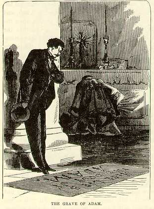

The Tomb of AdamBut the feature of the place is a short column that rises from the middle of the marble pavement of the chapel, and marks the exact centre of the earth. The most reliable traditions tell us that this was known to be the earth's centre, ages ago, and that when Christ was upon earth he set all doubts upon the subject at rest forever, by stating with his own lips that the tradition was correct. Remember, He said that that particular column stood upon the centre of the world. If the centre of the world changes, the column changes its position accord- ingly. This column has moved three different times of its own accord. This is because, in great convulsions of nature, at three different times, masses of the earth -- whole ranges of mountains, probably -- have flown off into space, thus lessening the diameter of the earth, and changing the exact locality of its centre by a point or two. This is a very curious and interesting circumstance, and is a withering rebuke to those philosophers who would make us believe that it is not possible for any portion of the earth to fly off into space. To satisfy himself that this spot was really the centre of the earth, a sceptic once paid well for the privilege of ascending to the dome of the church to see if the sun gave him a shadow at noon. He came down perfectly convinced. The day was very cloudy and the sun threw no shadows at all; but the man was satisfied that if the sun had come out and made shadows it could not have made any for him. Proofs like these are not to be set aside by the idle tongues of cavilers. To such as are not bigoted, and are willing to be convinced, they carry a conviction that nothing can ever shake. If even greater proofs than those I have mentioned are wanted, to satisfy the headstrong and the foolish that this is the genuine centre of the earth, they are here. The greatest of them lies in the fact that from under this very column was taken the dust from which Adam was made. This can surely be regarded in the light of a settler. It is not likely that the original first man would have been made from an inferior quality of earth when it was entirely convenient to get first quality from the world's centre. This will strike any reflecting mind forcibly. That Adam was formed of dirt procured in this very spot is amply proven by the fact that in six thousand years no man has ever been able to prove that the dirt was not procured here whereof he was made. It is a singular circumstance that right under the roof of this same great church, and not far away from that illustrious column, Adam himself, the father of the human race, lies buried. There is no question that he is actually buried in the grave which is pointed out as his -- there can be none -- because it has never yet been proven that that grave is not the grave in which he is buried. The tomb of Adam! How touching it was, here in a land of strangers, far away from home, and friends, and all who cared for me, thus to discover the grave of a blood relation. True, a distant one, but still a relation. The unerring instinct of nature thrilled its recognition. The fountain of my filial aflfection was stirred to its profoundest depths, and I gave way to tumultuous emotion. I leaned upon a pillar and burst into tears. I deem it no shame to have wept over the grave of my poor dead relative. Let him who would sneer at my emotion close this volume here, for he will find little to his taste in my journeyings through Holy Land. Noble old man -- he did not live to see me -- he did not live to see his child. And I -- I -- alas, I did not live to see him. Weighed down by sorrow and disappointment, he died before I was born -- six thousand brief summers before I was born. But let us try to bear it with fortitude. Let us trust that he is better off where he is. Let us take comfort in the thought that his loss is our eternal gain. |